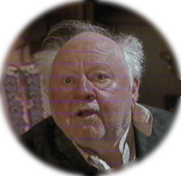
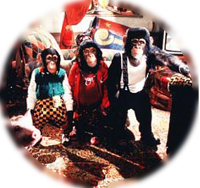

Personaggi
-
Babe
Maialino nato in allevamento e prematuramente sottratto alle cure della madre che viene vinto dal signor Hoggett in una fiera e ben presto diverrà parte della famiglia.
Accudito assieme ai suoi stessi cuccioli dal cane Fly, il maialino crede di essere anch'egli un cane da pastore e dimostra fin da subito un innato talento e una spiccata predisposizione per questa attività.
Da ultimo si rivelerà superiore ai suoi stessi maestri riportando l'inaspettata vittoria in una competizione per cani da pastore con lo pseudonimo di Pig, per la gioia dei suoi compiaciuti e sorpresi padroni.
-
Arthur Hoggett
Fattore della Nuova Zelanda sposato con la signora Hoggett e proprietario di una grande fattoria con molti animali.
La famiglia acquista inaspettatamente un nuovo membro quando il signor Hoggett, a una fiera di paese, vince il maialino Babe indovinandone il peso esatto.
Il signor Hoggett e il suo nuovo amico diventeranno col tempo inseparabili e il maialino sarà indispensabile in più di un'occasione per dare una mano al suo padrone.
- Torna su
-
Esmé Hoggett
Moglie del signor Hoggett, si occupa della casa padronale e dà una mano al marito nei lavori della fattoria.
È un'abilissima cuoca anche se purtroppo talvolta non mostra per gli animali, eccezion fatta per la viziatissima gatta Duchessa, la dovuta considerazione.
-
Fly
Esemplare femmina di border collie è uno dei cani da pastore della fattoria del signor Hoggett assieme al suo compagno Rex.
Accudisce Babe quando il signor Hoggett lo porta alla fattoria e lo cresce amorevolmente assieme ai suoi cuccioli, insegnandogli il duro lavoro del cane da pastore.
- Torna su
-
Rex
Cane da pastore della fattoria del signor Hoggett, dal carattere un po' burbero. Inizialmente non accoglie di buon grado il nuovo arrivato con quel muso schiacciato e le orecchie corte, e per questo si metterà contro la sua amata Fly e il suo stesso padrone.
Dopo l'iniziale diffidenza, però, sa accogliere il maialino fra i membri della famiglia e, promettendo alle pecore di usare loro modi più gentili, alla fine del film ha un ruolo fondamentale per determinare la vittoria di quello strano cane chiamato Pig alla gara.
-
Ferdinand
Papero della fattoria del signor Hoggett che fa le veci del gallo sperando in tal modo di riuscire a non finire in pentola.
Coinvolge Babe in una disastrosa spedizione ai danni della sveglia del signor Hoggett, che li porta a un incontro ravvicinato con Duchessa e a distruggere il salotto di casa.
Rischia invece di finire in forno come "anatra all'arancia" per il pranzo di Natale ma fortunatamente riesce infine a scampare a un destino che sembrava segnato.
- Torna su
-
Maa
Anziana e saggia pecora della fattoria del signor Hoggett, inizialmente mette in guardia Babe sul conto dei cani da pastore, di cui non si fida.
Grazie ai suoi consigli Babe imparerà ad essere gentile con le pecore del gregge che deve tenere a bada, ottenendo così risultati migliori dei cani stessi.
La sua mancanza di fiducia nei confronti della razza canina si dimostra fondata perché sarà l'attacco da parte di un branco di feroci cani sfuggiti all'accalappiacani a esserle fatale. Della sua morte è inizialmente accusato Babe anche se all'ultimo Fly farà capire la verità al signor Hoggett.
-
Duchessa
Perfida gatta di famiglia, abita nella grande casa padronale assieme al signor Hoggett e alla signora Hoggett, dalla quale è molto viziata.
Non è molto amichevole nei confronti di Babe e mette a repentaglio la sua partecipazione alla gara per cani da pastore graffiandolo prima e rivelandogli che gli uomini si nutrono di carne di maiale poi.
- Torna su
-
Fugly Floom
Anziano zio della proprietaria dell'hotel Pulcilandia e clown in pensione, si esibisce negli ospedali per il divertimento di pazienti grandi e piccini.
Attratto dal potenziale artistico di Babe, rapisce il maialino e tenta di coinvolgerlo nei propri spettacoli ma, essendo un gran pasticcione, rischia di appiccare un incendio durante il suo spettacolo scatenando un gran parapiglia.
-
Thelonius
Orangotango ammaestrato da Fugly Floom, vive anch'egli nell'hotel Pulcilandia e si veste come una persona. È il capo della stravagante banda di scimmie al servizio del vecchio clown.
-
Bob, Tesoro e Sciccoso
Trio di scimmie ammaestrate al servizio di Fugly Floom che risiedono come ospiti nel bizzarro hotel Pulcilandia.
Si dimostrano in ogni circostanza fedeli al proprio padrone e non esitano a mettere in pericolo Babe per raggiungere i loro scopi.
- Torna su